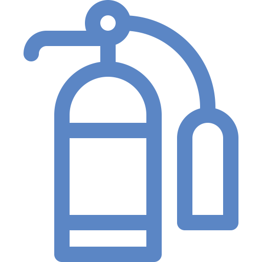
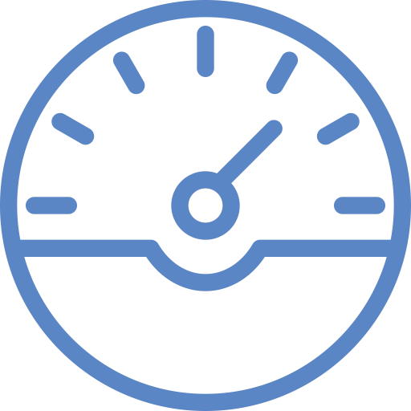
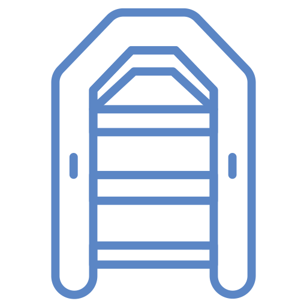
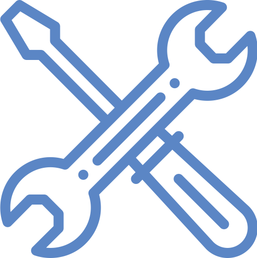

Выполняемые работы
Компания "НОБЕЛЬ" готова предложить судовладельцам широкий спектр услуг по обслуживанию, изготовлению аварийно-спасательного имущества, ремонту механических и электрических частей, проверке и ремонту судового радиооборудования, а также сюрвейерские услуги.
Освидетельствование и испытание индивидуальных спасательных средств
Испытание нагрудника
Испытания спасательного жилета
Испытания спасательного круга
Испытания страховочного пояса пожарного
Освидетельствование буйков
Освидетельствование ГТК
Освидетельствование костюма для работы в агрессивной среде
Освидетельствование костюма пожарного
Освидетельствование теплозащитных средств (ТЗС)
Испытание полотнища пожарного/ Проверка пластыря
Проверка диэлектрических средств
Проверка диэлектрического инструмента
Испытание нагрудника
Проверка дыхательных аппаратов
Проверка дыхательных аппаратов №2, 3
Проверка самоспасателей № 2, 3
Зарядка воздухом баллона самоспасателя/дыхательных аппаратов
ТО резервного баллона дыхательного аппарата
Ввод в эксплуатацию дыхательного аппарата
Капитальный ремонт и продление срока службы АСВ-2
Калибровка манометра дыхательного аппарата
Испытание такелажа
Спасательного шкентеля с мусингами
Штормтрапа лоцманского
Штормтрапа посадочного
Троса страховочного пожарного
Карабина пожарного
Носилок
Сетки грузовой 4х4 г/п
Якорного каната
Переносных талей (до 1000кг)
Переносных талей (свыше 1000кг)
Балки, грузовых талей (до 1000 кг)
Балки, грузовых талей (свыше 1000 кг)
Грузовой стрелы до 1 т.
Цепного захвата для бочек 1т.
Грузовой стрелы
Ручной тали от 0,5 т – 3 т.
Сетки подтрапной
Электротельфера 0,5 т.
Дефектация и испытание нагрузкой трап-сходни
Проверка пластыря
Проверка бонового заграждения
Опрессовка стропа втулкой
Заделка коуша в оган

Испытание и техническое обслуживание пожарного оборудования
Ремонт, окраска огнетушителей
Взвешивание баллонов станции СО2
Зарядка огнетушителей углекислотой
Зарядка ОП порошком ВЕКСОН АВС
Зарядка переносного пенного комплекта пенообразователем
Освидетельствование стационарной воздушно-пенной установки
ТО огнетушителей ОУ
ТО огнетушителей ОП
ТО ОВП, ГПП-100, ВПА, ППК, ГВПП, УСПП, СО-500
Освидетельствования установки ВПА-40
ТО генератора ГПС-600
ТО передвижных систем пожаротушения
ТО станций СО2, гидра испытания баллонов, головок
Освидетельствование баллонов СЖБ
ТО кислородного баллона с зарядкой О2
ТО воздушных баллонов спасательных шлюпок с зарядкой воздухом
ТО переносного пенного комплекта
ТО пускового баллона
ТО станций СО2, гидравлические испытания
ТО судовой станции СО-II, III
ТО пусковых воздушных баллонов
ТО пеногенератора
ТО трубопровода системы станции СО2
Продувка трубопроводов системы пожаротушения
Освидетельствование и испытание пожарных рукавов, 10 м
Освидетельствование и испытание пожарных рукавов, 20 м
Освидетельствование и испытание пожарных стволов
Испытание кошмы огнестойкой
Оклетневка пожарных рукавов проволокой
Ремонт, гидравлические испытания и обслуживания сосудов под давлением
Проверка электромеханического оборудования и автоматики
Проверка аэрозольной станции пожаротушения
Испытание датчиков пожарной сигнализации
Ремонт температурных датчиков пожарной сигнализации
Ремонт дымовых датчиков пожарной сигнализации
Ремонт станции пожарной сигнализации
Тестирование станции пожарной сигнализации
Установка датчика пожарной сигнализации
Установка датчика пожарной сигнализации, сложная
Монтаж, пуско-наладочные работы, испытания, обслуживание и ремонт станции пожарной сигнализации
Проверка сопротивления заземления корпуса с берегом
Ежегодная проверка сопротивления изоляции ответственных потребителей судового электрооборудования
Замер остаточной емкости аккумулятора (кислотных)
Замер остаточной емкости аккумулятора (щелочных)
Ежегодная проверка датчиков давления
Ежегодная проверка датчиков температуры
Ежегодная проверка блоков автоматики
Ежегодная проверка датчиков сигнализации налива груза танкеров на 95%
Проверка тревожной кнопки
ТО гирокомпаса с заменой поддерживающей жидкости
Калибровка датчиков давления/температуры
Проверка сопротивления изоляции кабельных сетей
Проверка дымосигнальной системы обнаружения пожара
Проверка тепловых, дымовых датчиков и ручных извещателей систем обнаружения пожара
Проверка переходного сопротивления заземлений молниеотводов
Проверка генераторов (защиты от токов короткого замыкания, обратного тока, перегрузки, минимального напряжения ГРЩ)
Ремонт молниеотвода
Проверка системы контроля температуры и обнаружения газа в насосном отделении
Проверка системы перелива груза
Испытание датчиков водяной системы локального пожаротушения
Замер сопротивления защиты от статистического электричества
Ежегодная проверка датчиков уровня жидкости общесудовой АПС(электронных)
Ежегодная проверка датчиков уровня жидкости общесудовой АПС (механических)
Техническое обслуживание и ремонт средств автоматизации, защиты и АПС
Ежегодная проверка автоматических выключателей: генераторных, электрический устройств
Ежегодная проверка датчиков сигнализации налива груза танкеров на 95% и 98%
Ежегодная проверка системы защиты и контроля грузовых насосных отделений
Ежегодная проверка датчиков системы защиты и контроля грузовых насосных отделений
ТО фонаря взрывобезопасного
Ежегодная проверка аварийных светильников
То P/V – клапанов
Испытание устройств токовой и тепловой защиты
Проверка радиооборудования
Береговое ТО АРБ спутниковой системы КОСПАС-САРСАТ
Договор БТО ГМССБ
Предварительная проверка судового радиооборудования ГМССБ
Проверка радиостанции переносной УКВ ГМССБ
Проверка АРБ
Проверка АИС
Проверка РЛО
Программирование аварийного радиобуя
Установка, пуско-наладочные работы, обслуживание и ремонт радио и навигационного оборудования, замена встроенных элементов питания,
программирование радиооборудования
Установка, программирование судовых систем охранного оповещения (ССОО)
Проверка СКДВП (системы контроля дееспособности вахтенного помощника капитана)
Береговое техническое обслуживание и ремонт радиооборудования ГМССБ
Установка, пуско-наладочные работы, БТО и ремонт радио- и навигационного радиооборудования
Береговое техническое обслуживания и ремонт УКВ – радиоустановка SM-005, аппаратура двусторонней радиотелефонной связи
Береговое техническое обслуживания и ремонт ПВ/КВ радиоустановка SM-003
Техническое обслуживание и ремонт спутникового радиобуя системы КОСПАС-САРСАТ
Техническое обслуживание и ремонт: судовая земная станция ИНМАРСАТ-С
Техническое обслуживание и ремонт: самовсплывающий спутниковый аварийный радиобуй системы КОСПАС-САРСАТ
Береговое техническое обслуживание АРБ спутниковой системы КОСПАС-САРСАТ
Обслуживание и ремонт РЛО
Техническое обслуживание и ремонт: Приемник службы НАВТЕК
Техническое обслуживание и ремонт: Приемоиндикатор глобальной навигационной спутниковой системы GPS
Техническое обслуживание и ремонт: Судовой радиолокационный ответчик
Техническое обслуживание и ремонт: Аппаратура автоматической идентификационной системы АИС
Техническое обслуживание и ремонт судовых системы охранного оповещения
Техническое обслуживание и ремонт: Система громкоговорящей связи
Техническое обслуживание и ремонт: Навигационный эхолот
Техническое обслуживание и ремонт: Доплеровский лаг
Техническое обслуживание и ремонт: Электронная картографическая навигационно-информационная система
Обслуживание и ремонт навигационно-штурманского оборудования
Регламентные работы по техническому обслуживанию регистраторов данных рейса (УРД-Р), ремонт, замена встроенных элементов питания
Установка, пуско-наладочные работы, обслуживание и ремонт радио- и навигационного оборудования, замена встроенных элементов питания, программирование радиооборудования
Проверки и испытания радиооборудования на борту судна и плавучих буровых установок и морских стационарных платформ
Техническое обслуживание силовых сетей, сетей освещения, сетей сигнальных и навигационных огней
Диагностика и проверка сопротивление изоляции кабельных трасс и молниеотводов прибором ДИПСЭЛ
Обслуживание и ремонт навигационно-штурманского оборудования
Регламентные работы по техническому обслуживанию регистраторов данных рейса (УРД-Р), ремонт, замена встроенных элементов питания
Установка, пуско-наладочные работы, обслуживание и ремонт радио- и навигационного оборудования, замена встроенных элементов питания, программирование радиооборудования
Проверки и испытания радиооборудования на борту судна и плавучих буровых установок и морских стационарных платформ

Метрологическая служба
Береговое ТО АРБ спутниковой системы КОСПАС-САРСАТ
Калибровка манометров
Калибровка манометров технических
Калибровка манометра дыхательного аппарата
Калибровка амперметров, вольтметров
Калибровка мегаомметра
Калибровка частотомера
Калибровка термометра
Калибровка киловаттметра
Калибровка тахометра
Калибровка переносного мегаомметра
Ремонт манометров
Поверка мегаомметра переносногo
Поверка газоанализатора одноканального
Поверка газоанализатора двухканального
Поверка газоанализатора трехканального
Поверка газоанализатора многоканального за один канал
Поверка мегаомметра
ТО аспиратора
ТО газоанализатора
ТО сигнализатора
ТО алкотестера
ТО экспозиметра
Испытание электронных линеек
Проверка прибора комбинированного
Проверка измерителя сопротивления
Поверка раскепника
Поверка пробоотборника
Проверка электронной линейки
Проверка прибора контроля нефти в стоке
Проверка клещей-электроизмерительных
Испытательная лаборатория
Анализ воздуха в закрытых судовых помещениях
Анализ силиконовой жидкости демпферов крутильных колебаний
Анализ нефтесодержащих вод
Анализ пенообразователя низкой и средней кратности в судовых системах пенотушение
Гидравлические испытания
Гидравлические испытания баллонов дыхательных аппаратов (демонтаж, монтаж головки, очистка, сушка)
Гидравлические испытания баллонов 2-80 л(демонтаж, монтаж головки, очистка, сушка)
Гидравлические испытания воздушных баллонов шлюпок 40-80 л. (демонтаж, монтаж головки, очистка, сушка)
Гидравлические испытания пусковых баллонов
Гидравлические испытания кислородного баллона

Проверка спускоподъёмных устройств
Испытание шлюпки надутой (дежурной)
Замена лопарей шлюпочных лебедок на спусковом устройстве (рампе) шлюпки свободного падения
Замена лопарей шлюпочных лебедок кран-балки или гравитационной шлюпбалки
Испытание шлюпбалок (спусковых устройств) и устройств разобщения шлюпки спасательной (1 раз в год)
Испытание спусковых устройств дежурной шлюпки и плота (ежегодное) (без надзора регистра)
Испытание спусковых устройств и устройств разобщения шлюпки спасательной (пятилетнее)
Испытание корпуса шлюпки спасательной
Изготовление подъемных строп шлюпки свободного падения
Изготовление подъемных строп дежурной шлюпки (паук)
Замена троса грузолюдского (диаметр 11,5 мм)
Замена троса грузолюдского (диаметр 15 мм)
Замена троса грузолюдского (диаметр 16,5 мм)
Заделка стального каната в коуш
Заделка каната в оган
Заделка каната в коуш
Заделка коуша в трос
Испытание грузового крана
Внутреннее освидетельствование воздушных баллонов спасательных шлюпок
Установка походного тента спасательной шлюпки
Испытание тормоза буксирной лебедки
Проверка надувных спасательных средств
Гидростата
ПСН – 6
ПСН – 10
ПСН – 16
ПСН – 20
SMLR –A-6
RAFT-A-6(II)/10(II)/15(II)/16(II)/20(II)/25(II)
RAFT-D-12/16/20/25
SMLR-A-6/10/15/16/20/25
SMLR-D-12/16/20/25
RAFT-SR- 6/10/15/20/25/50
RAFT-DSR-25/37
KHA-6, 8, 10, 12, 15, 16, 20, 25, 30
KHZ-6, 10, 15, 20, 25, 50, 100, 110, 125
KHD-12, 15, 16, 20, 25; KHZD-25, 37
KHR-6, 10, 25, 30, 50, 65, 100
KHK-6, 10, 25, 30, 50, 65, 100
KHY-4, 6, 8, 10, 12; KHYJ-4, 6, 8, 10
Опломбирование плота на судне
Оформление дубликата паспорт на ГРУ
Оформление дубликата паспорт на ПСН
Оформление дубликата паспорт на СГНП
Оформление дубликата паспорт на ТЗС
Ремонт гидростата
Ремонт контейнера, крупный, средний, мелкий
Ремонт ремня бандажного
Ремонт чехла упаковочного
Переукладка плотов
Проверка навигационного оборудования
Анемометра
Барометра-анероида
Барографа
Бинокля
Компаса магнитного
Компаса шлюпочного
Кренометра
Пеленгатора
Секундомера
Секстана
Хронометра
Часов судовых
Комплект ремонтный для компаса
ТО гирокомпаса с заменой поддерживающей жидкости
Ремонт часов
Ремонт компаса
Ремонт приборов
Устранение девиации компаса магнитного

Ремонтные работы
Ремонт элементов сварных конструкций корпусов стальных судов
Ремонт трубопроводов и арматура судовых систем и систем механических установок
Капитальный ремонт судовых двигателей внутреннего сгорания мощностью до 1500 кВт
Ремонт ДАУ судовых ГД
Ремонт регуляторов числа оборотов двигателей Г-60, Г-70, 6Ч18/22, 6L275A2L;
Ремонт ТНВД двигателей 6Ч12/14, 6Ч18/22, 6S160
Центровка двигателя
Ремонт электрических машин
Ремонт судовых корпусных конструкций
Ремонт главных, аварийных, групповых распределительных щитов, пультов управления, и контроля магнитных станций, пусковых устройств
Насосов рулевых машин
Ультразвуковая дефектоскопия
Ультразвуковая толщинометрия
Проверка плотности закрытий трюмов с помощью ультразвуковой аппаратуры
Проектирование
Проектно-конструкторские работы
Оформление документации
Оформление документации и организация мероприятий по соблюдению требований ММСП на судах
Организация выполнения мероприятий в рамках программы производственного контроля (выполнение мероприятий по соблюдению требований ММСП)
Организация инструментальных измерений вредных и опасных факторов, исследование воздуха рабочей зоны
Организация проведения мероприятий по дезинсекции, дезинфекции и дератизации
Организация получения санитарного свидетельства
Организация получения свидетельства освобождения от санитарного контроля